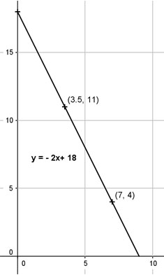

Lineare Funktionen Aufgabe 38 Eine Kerze ist nach einer Brennzeit von einer Stunde von 18 cm auf 16 cm abgebrannt. a) Wie lautet die Funktionsgleichung für die Abhängigkeit der Kerzenlänge l von der Brennzeit t? b) Wie lang ist die Kerze nach einer Brennzeit von 3,5 Stunden? c) Wie viel Stunden hat die Kerze gebrannt, wenn sie noch 4 cm lang ist? a) l = m * t + b Die Steigung muss negativ sein, die Kerzenlänge nimmt ab. m = - (18 cm - 16 cm)/h = - 2 cm/h b = Anfangslänge = 18 cm l = 18 - 2 * t b) t = 3,5 h l = 18 - 2 * 3,5 l = 11 cm c) l = 4 cm 4 = 18 - 2 * t | +2t 2t + 4 = 18 | -4 2t = 14 | :2 t = 7h 